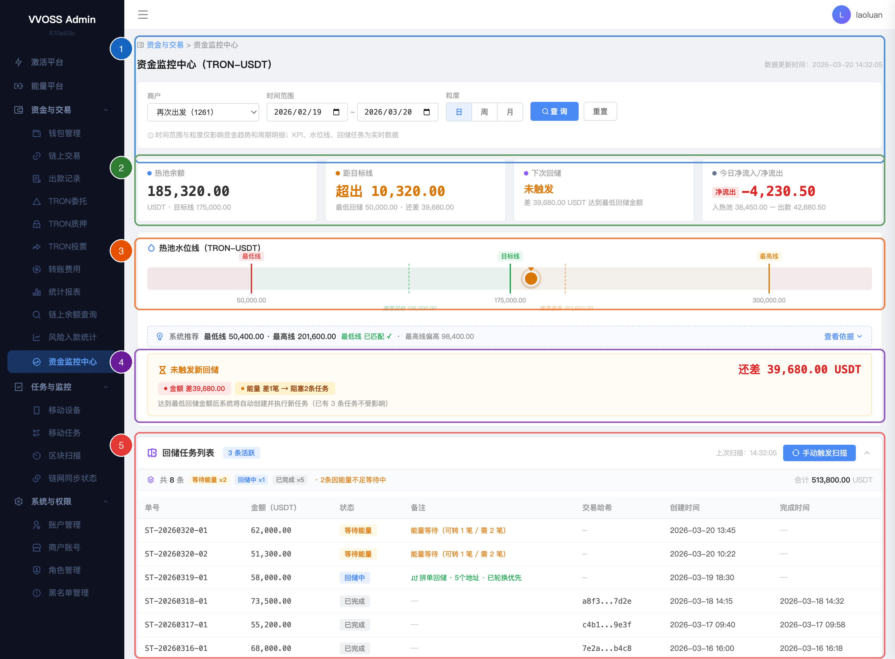
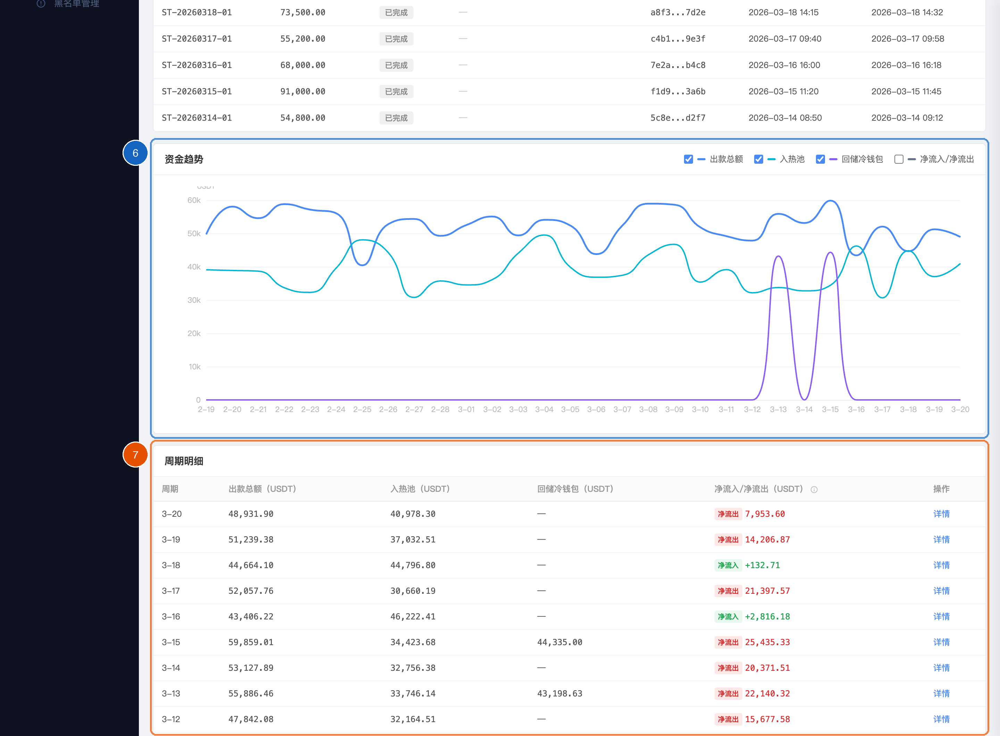

| 产品线 | VVOSS Admin v3 |
| 模块 | 资金与交易 |
| 链/币种 | TRON - USDT |
| 版本 | v1.2 |
| 日期 | 2026-03-22 |
| 作者 | 产品团队 |
| 状态 | 已确认 |
每个商户在 TRON 链上拥有独立的热池钱包，用于日常出款。热池资金过多会增加链上风险，过少会导致出款中断。运维团队需要一个统一视图来监控热池水位，并管理将多余资金从热池回储至冷钱包的流程。
| 角色 | 场景 | 预期行为 |
|---|---|---|
| 运维 | 每日巡检，查看各商户热池状态 | 进入页面，选择商户，看到 KPI + 水位线结论，确认无需操作 |
| 运维 | 收到 xbb"余额不足"告警 | 进入页面确认差额，手动从冷钱包补给到热池 |
| 运维 | 收到 xbb"回储失败"告警 | 进入页面排查具体失败原因，协调技术团队处理 |
| 运维 | 怀疑某商户资金异常 | 查看趋势图和周期明细，点击某天查看详细出款订单 |
| 财务 | 月度复盘，了解资金流转情况 | 切换粒度为"月"，查看每月出款/入款/回储趋势 |
页面从上到下依次排列 6 个模块：
| # | 模块 | 数据性质 | 一句话说明 |
|---|---|---|---|
| 1 | 全局筛选区 | — | 选择商户 + 时间范围 + 粒度 |
| 2 | KPI 卡片（×4） | 实时 | 热池余额、距目标线、下次回储、今日净流入/净流出 |
| 3 | 热池水位线 | 实时 | 可视化水位条 + 智能状态条 + 条件判断 |
| 4 | 回储任务列表 | 实时 | 活跃任务 + 已完成任务 + 手动扫描 |
| 5 | 资金趋势 | 历史 | 出款/入热池/回储/净变化折线图 |
| 6 | 周期明细 | 历史 | 每个周期的资金汇总表格 + 详情抽屉 |
以下为原型截图，标注编号对应各功能模块。点击任一模块说明的章节号可查看详细描述。

| 标注 | 模块 | 说明 | 章节 |
|---|---|---|---|
| 1 | 全局筛选区 | 商户选择（全局生效）+ 时间范围 + 粒度切换（日/周/月）+ 查询/重置。商户切换后全页面数据刷新；时间和粒度仅影响趋势图与周期明细。 | §4.1 |
| 2 | KPI 概览卡片 ×4 | 四张卡片横排铺满：① 热池余额 ② 距目标线 ③ 下次回储 ④ 今日净流入/净流出。实时数据，帮助运维 10 秒内判断当前状态。余额低于最低线时卡片变红告警。 | §4.2 |
| 3 | 热池水位条 | 横向色块条：红色（0~最低线）→ 绿色（最低线~目标线）→ 橙色（目标线~最高线）→ 深红（超最高线）。三条标记线 + 当前余额圆点。 | §4.3.1 |
| 4 | 智能状态条 + 条件药丸 | 一句话告诉运维当前状态结论（如"未触发新回储 · 还差 14,680 USDT"），下方 2 个药丸实时显示金额和能量条件满足情况。 | §4.3.2 |
| 5 | 回储任务列表 | 展示所有回储任务（等待能量/回储中/失败/已完成），含状态摘要、合计金额、手动扫描按钮（10秒冷却）。已完成任务直接展示，不折叠。 | §4.4 |

| 标注 | 模块 | 说明 | 章节 |
|---|---|---|---|
| 6 | 资金趋势折线图 | 出款总额（蓝）/ 入热池（青）/ 回储冷钱包（紫）/ 净流入净流出（灰虚线，默认隐藏）。可勾选图例控制显示/隐藏，鼠标悬浮查看具体数值，点击数据点打开详情抽屉。 | §4.5 |
| 7 | 周期明细表 | 按日/周/月列出每个周期的出款总额、入热池、回储冷钱包、净流入/净流出。正值绿色"净流入"，负值红色"净流出"，偏离 7 日均值 2 倍以上显示 ⚠。每行"详情"链接打开抽屉，底部分页支持 10/20/50 条每页。 | §4.6 |
| 控件 | 说明 |
|---|---|
| 商户选择 | 下拉单选，仅展示当前用户有权限的商户。默认选中第一个商户。 不提供"全部商户"选项（每个商户独立热池，聚合无意义）。 切换商户后全页面所有数据刷新。 |
| 时间范围 | 日期区间选择器，默认近 30 天。仅影响资金趋势和周期明细。 |
| 粒度 | 日 / 周 / 月 单选组，默认"日"。影响范围同时间范围。 |
| 查询 / 重置 | 查询按钮刷新历史数据；重置按钮恢复筛选默认值。 |
筛选区底部展示灰字提示："时间范围与粒度仅影响资金趋势和周期明细；KPI、水位线、回储任务为实时数据"。
4 张卡片横排铺满，展示最关键的 4 个实时指标，帮助运维 10 秒内判断当前状态。
快速判断热池是超出目标还是低于目标：
| 情况 | 展示 |
|---|---|
| 超出目标线 且 达到回储门槛 | 橙色"超出 X"，提示"已达最低回储金额" |
| 超出目标线 但 未达回储门槛 | 橙色"超出 X"，提示"最低回储 Y · 还差 Z" |
| 正好在目标线 | 绿色"正好在目标线" |
| 低于目标线 但 高于最低线 | 红色"低于 X"，提示"注意补充" |
| 低于最低线 | 红色"低于 X"，提示"请尽快从冷钱包补给" |
展示系统创建下一个回储任务需要满足的条件状态（不影响已有任务）：
| 状态 | 含义 | 颜色 |
|---|---|---|
| 无需回储 | 余额未超目标线 | 绿色 |
| 未触发 | 超出金额未达最低回储门槛 | 橙色 |
| 待执行 | 金额达标，等待能量恢复 | 紫色 |
| 已触发 | 条件满足，系统已自动执行 | 绿色 |
用一条横向色块条直观展示当前余额所处区间：
| 区间 | 颜色 | 含义 |
|---|---|---|
| 0 ~ 最低线 | 红色 | 余额不足，需从冷钱包补给 |
| 最低线 ~ 目标线 | 绿色 | 水位健康，无需操作 |
| 目标线 ~ 最高线 | 橙色 | 超出目标线，可能触发回储 |
| 最高线以上 | 深红 | 超上限，应立即回储 |
水位条上有三条标记线（最低线/目标线/最高线），以及一个表示当前余额的圆点。
在水位条下方用一句话告诉运维：现在什么状态、差什么、系统会怎么做。
| 状态 | 什么时候出现 | 运维看到什么 |
|---|---|---|
| 余额不足 | 余额低于最低线 | "低于最低线 X USDT" + "请尽快从冷钱包补给" |
| 无需回储 | 余额在最低线~目标线之间 | "热池水位正常，不会创建新的回储任务" |
| 未触发新回储 | 超出目标线但金额不够一次回储 | "还差 X USDT" + "达到最低回储金额后系统自动执行" |
| 新回储待执行 | 金额够了但能量不足 | "等待能量满足" + "金额已达标，条件满足后立即执行" |
| 新回储已触发 | 金额和能量都满足 | "条件满足，已自动执行" + "系统已从归集地址拼单回储" |
| 超出上限 | 余额超过最高线 | "超上限 X USDT" + "系统已自动触发回储" |
当有正在执行的任务时，状态条提示末尾会追加"（已有 X 条任务不受影响）"，避免运维误解。
状态条下方横排 2 个小药丸，展示两个回储条件的实时状态：
| 条件 | 满足 | 未满足 |
|---|---|---|
| 金额 | ✓ 显示 "金额 可回储/最低金额" | ✗ 显示 "金额 差 X" |
| 能量 | ✓ 显示 "能量 可转N笔" | 等待 显示 "能量 差N笔 → 阻塞M条任务" |
当热池余额超过目标线且达到最低回储金额时，系统自动从多个归集地址拼单，将超出部分资金转至冷钱包，这个过程叫"回储"。
| 状态 | 含义 | 运维需要做什么 |
|---|---|---|
| 等待能量 | 任务已创建，但当前能量不足以执行 | 无需操作，系统自动等待能量恢复 |
| 回储中 | 正在执行（从归集地址拼单转至冷钱包） | 无需操作，等待链上确认 |
| 已完成 | 链上确认成功 | — |
| 失败 | 执行失败 | 需要操作：排查具体失败原因，协调技术团队处理 |
等待能量 → （能量满足，立即） → 回储中 → 已完成 / 失败
失败 → （运维排查处理） → 回储中 → 已完成 / 失败
摘要行：显示活跃任务数量、各状态分布、等待原因汇总、合计金额。
活跃任务表（展示未完成任务）：
| 列 | 说明 |
|---|---|
| 单号 | 回储单号 |
| 金额（USDT） | 本次回储金额 |
| 状态 | 等待能量 / 回储中 / 失败 |
| 备注 | 等待能量 → 显示阻塞原因；回储中 → 显示执行策略；失败 → 显示失败原因 |
| 交易哈希 | 链上交易 ID |
| 创建时间 | — |
| 完成时间 | 未完成显示"—" |
已完成任务：在活跃任务下方直接展示，不折叠。每日绝大部分为已完成状态。
| 属性 | 说明 |
|---|---|
| 作用 | 手动让系统立即检查是否需要创建新回储任务 |
| 操作 | 点击按钮 → 弹出确认框 → 确认后显示"扫描中" → 完成后显示"扫描完成" |
| 冷却时间 | 10 秒，防止频繁点击 |
折线图展示一段时间内的资金流转趋势，帮助运维发现异常模式和季节性规律。
| 数据线 | 颜色 | 默认是否显示 |
|---|---|---|
| 出款总额 | 蓝色实线 | 是 |
| 入热池 | 青色实线 | 是 |
| 回储冷钱包 | 紫色实线 | 是 |
| 净流入/净流出 | 灰色虚线 | 否（需手动勾选显示） |
交互：
以表格形式展示每个时间周期的资金汇总，支持分页。
| 列 | 说明 |
|---|---|
| 周期 | 日期 / 周范围 / 月份（随粒度变化） |
| 出款总额 | — |
| 入热池 | 0 显示 "—" |
| 回储冷钱包 | 0 显示 "—" |
| 净流入/净流出 | 正值绿色"净流入"，负值红色"净流出"，0 显示"—"。偏离近7日均值2倍以上显示 ⚠ 提示 |
| 操作 | "详情" → 打开抽屉 |
分页支持 10 / 20 / 50 条每页。
从右侧滑出的抽屉面板，展示某个日期/周期的详细数据。
横排展示 4 个指标：出款总额、入热池、回储冷钱包、净流入/净流出。每个指标有 tooltip 说明计算口径。
以下情况在页面上醒目展示，运维进入页面即可感知：
| 情况 | 页面表现 |
|---|---|
| 余额低于最低线 | KPI 卡片变红 + 水位线显示"余额不足"红色状态 |
| 余额超过最高线 | 水位线显示"超出上限"红色状态 |
| 有任务因能量不足等待 | 能量指示器橙色 + 显示"阻塞 N 条任务" |
| 有失败任务 | 红色标签 + 失败原因提示 |
| 出款有异常 | 详情抽屉内黄色提示条 |
通过 xbb聊天软件 向运维推送关键告警，确保异常状态即时触达。
| 场景 | 触发条件 | 级别 | 消息内容模板 |
|---|---|---|---|
| 余额不足 | HOT_BALANCE < HOT_MIN | 严重 | ⚠️ 【余额不足】商户 {商户名} 当前余额 {余额} USDT，低于最低线 {HOT_MIN} USDT 差额 {差额} USDT，请尽快从冷钱包补给 |
| 超出上限 | HOT_BALANCE > HOT_MAX | 紧急 | 🔴 【超出上限】商户 {商户名} 当前余额 {余额} USDT，超过最高线 {HOT_MAX} USDT 超出 {超出额} USDT，系统已自动触发回储 |
| 回储任务失败 | 任务执行失败 | 严重 | ❌ 【回储失败】商户 {商户名} 回储单号 {单号}，金额 {金额} USDT 失败原因：{原因}，请尽快排查处理 |
| 余额恢复 | 余额从低于 HOT_MIN 恢复到正常 | 恢复 | ✅ 【余额恢复】商户 {商户名} 当前余额 {余额} USDT，已恢复至最低线以上 |
| 规则 | 说明 |
|---|---|
| 商户热池独立 | 每个商户拥有独立热池钱包，数据完全隔离 |
| 目标线 = 中间值 | 目标线 = (最低线 + 最高线) / 2，由最低线和最高线推导 |
| 回储金额 | = 余额 − 目标线（超出目标线的部分） |
| 回储条件（2 个） | ① 可回储金额 ≥ 最低回储金额 ② 能量充足 |
| 立即执行 | 条件满足后立即执行，不等待下次扫描 |
| 统一任务类型 | 不区分"普通"和"强制"，超过最高线用告警级别区分 |
| 拼单回储 | 从多个归集地址汇集，优先已轮换地址、大额优先 |
| 失败人工处理 | 系统不自动重试，xbb 通知运维后排查处理 |
| 低于最低线 → 告警 | 页面红色告警 + xbb 推送，运维手动从冷钱包补给 |
| 能量不足 → 等待 | 运维无需操作，系统自动等待能量恢复后执行 |
| 扫描冷却 | 手动扫描按钮 10 秒冷却时间 |
| 数据刷新 | 页面加载时拉取一次，无自动轮询 |
以下参数在商户编辑页配置，本页面只读展示。
| 参数 | 含义 | 谁来设 |
|---|---|---|
| 最低线（HOT_MIN） | 热池不能低于此值，否则影响出款，触发告警 | 运维在商户编辑页配置 |
| 最高线（HOT_MAX） | 热池不宜超过此值，超过则触发回储 | 运维在商户编辑页配置 |
| 目标线（HOT_TARGET） | 理想水位 = (最低线 + 最高线) / 2 | 系统自动计算 |
| 最低回储金额（BATCH_MIN） | 单次回储的最低金额门槛 | 运维在商户编辑页配置 |
本页面基于历史出款数据，在水位条下方提供最低线和最高线的推荐值，供运维配置参考。推荐值为只读展示，不自动修改配置。
| 参数 | 公式 | 含义 |
|---|---|---|
| 推荐最低线 (HOT_MIN) | 出款峰值(P95/h) × H_min × Safety | 即使完全无入款，热池也能独立扛住 H_min 小时出款高峰 |
| 推荐最高线 (HOT_MAX) | 出款峰值(P95/h) × H_max × Safety | 与最低线逻辑一致，超过 H_max 小时的资金不应留在热池 |
| 推荐目标线 (HOT_TARGET) | (HOT_MIN + HOT_MAX) / 2 | 最低线与最高线的中点 |
| 参数 | 含义 | 数据来源 |
|---|---|---|
| 出款峰值 (P95/h) | 过去 14~30 天每小时出款峰值（取 P95 分位） | 系统自动统计 |
| H_min（最小扛住时长） | 热池独立应对出款高峰的最少时长 | 默认 6h，可调 |
| H_max（最大扛住时长） | 热池资金的最长保留时长上限 | 默认 24h，可调 |
| Safety（保险系数） | 应对突发流量的安全余量 | 默认 1.2，常用 1.1~1.3 |